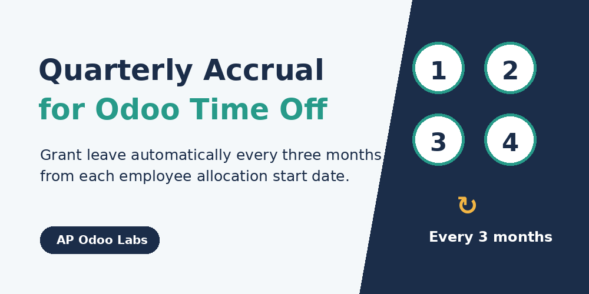
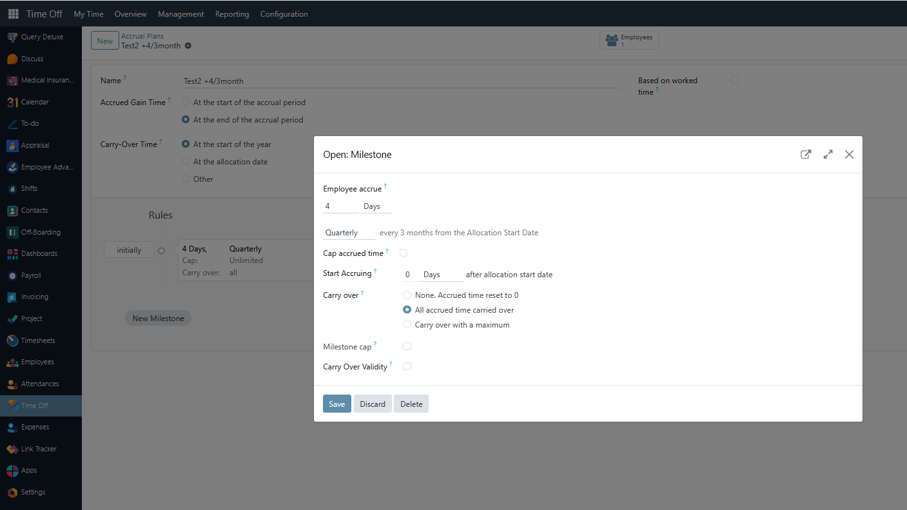
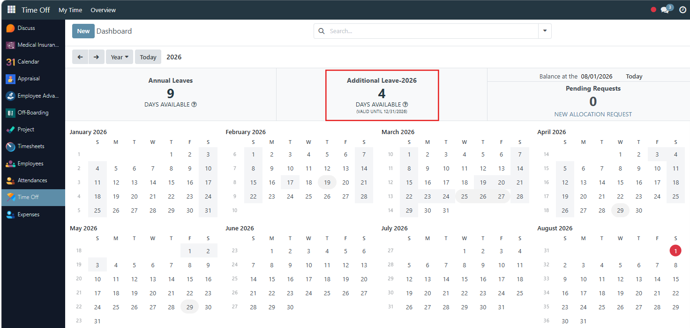

The cycle starts from the Allocation Start Date, so each employee can follow their own hire-date-based schedule.
Example: 15 April → 15 July → 15 October → 15 January.
Works with Odoo accrual allocations and the standard scheduled action.
This module adds Quarterly as an accrual frequency. The quarterly period is not fixed to calendar quarters. It is anchored to the employee's Allocation Start Date.
| Allocation Start Date | First accrual | Second accrual | Third accrual |
|---|---|---|---|
| 1 January 2026 | 1 April 2026 | 1 July 2026 | 1 October 2026 |
| 15 April 2026 | 15 July 2026 | 15 October 2026 | 15 January 2027 |
| 28 February 2026 | 28 May 2026 | 28 August 2026 | 28 November 2026 |

